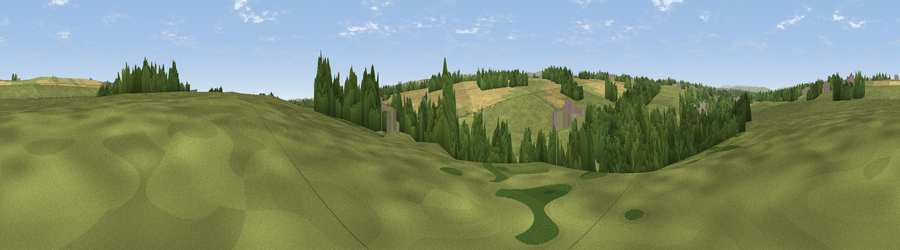

Viewpoint near Barnard Castle
#41453 in England · top 96% of its area beats it · near Barnard CastleWhere it is
The exact computed spot (NZ 06416 15280). Click the marker for map links.
The view, rendered

A 360° render of this exact spot computed from the terrain model, tree cover and land cover — summer colours, afternoon light, calibrated against photographs of famous viewpoints. Real trees, hedges and buildings will differ in detail.
The panorama
Grey silhouette: terrain skyline in each direction (720 bearings, Earth curvature and refraction included). Dashed green: skyline with trees (+15 m) and buildings (+8 m) as obstacles. Blue strip: how far the ground is visible on each bearing.
Where the view opens
Wedge length = distance to the farthest visible ground on that bearing (vegetation-aware). Rings at 10, 25 and 50 km.
What fills the view
46% grassland · 42% woodland · 7% cropland · 4% water · 1% built-up
Angular shares of the visible panorama (visual magnitude), not map area. Landscape diversity 0.47 (0–1 Shannon).
Key numbers
More beautiful places nearby
The staircase of upgrades: each row has a higher view potential than everything closer. Driving times are estimates from straight-line distance, calibrated against real road routing — check an actual route before setting out.
| Place | Direction | Drive | Score |
|---|---|---|---|
| Viewpoint near Startforth | WSW · 3 km | ~8 min | 58.8 |
| Viewpoint near Barningham | SSE · 4 km | ~9 min | 59.4 |
| Kilmond Scars | WSW · 4 km | ~9 min | 62.3 |
| Viewpoint near Whorlton | ENE · 5 km | ~11 min | 64.1 |
| Viewpoint near Barningham | SSW · 8 km | ~16 min | 72.7 |
| Viewpoint near Barningham | SSW · 8 km | ~17 min | 74.1 |
| Viewpoint near Eggleston | NNW · 10 km | ~20 min | 76.0 |
| Viewpoint c10024_7603 | WSW · 30 km | ~47 min | 76.9 |
54.53276, -1.90236 · source: osm viewpoint · position refined by local search. Computed location — check access rights before visiting.